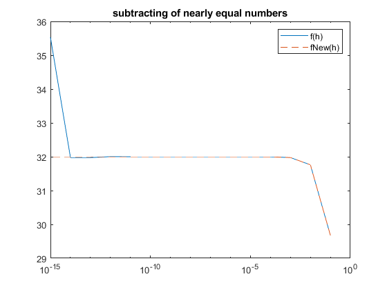

AMSC 460 - HW 5
Contents
Problem 1
Compute the relative error d = x − fl(x)/|x| exactly as a base-10 number, and show that d satisfies the upper bound d ≤ε_mach/2.
d = abs(0.4 * 2^(-49))/abs(12.8) eps/2 - d
d = 5.5511e-17 ans = 5.5511e-17
ans = 5.551115123125783e-17 > 0 so the d satisfies the upper bound d ≤ε_mach/2.
Problem 2
Let x = 2. To avoid subtraction of nearly equal numbers, find an alternative form f~(h) ≡ f(h) to evaluate f(h) = x^4 − (x − h)^4 /h for small h. Compute f(h) using MATLAB based on the formula (1) and the alternative form f~(h) you propose, and report your results for h = 10^−1, 10^-2, ..., 10^-15 on a semilogx plot (both functions should be on the same graph). What is lim_h→0 f(h)? Does your modified function compute more accurately for small h?
x = 2; f = @(h) (x^4 - (x-h).^4)./(h);
fNew(h) = [x^4 − (x − h)^4 /h] * [(x^4 + (x − h)^4 )/(x^4 + (x − h)^4)]
= (x^8 - (x − h)^8 )/h(x^4 + (x − h)^4)
factor (x^8 - (x − h)^8 ) = h(x^4+(x-h)^4)(x^2+(x-h)^2)(2x-h)
Cancel the common factor : h(x^4 + (x − h)^4)
fNew(h) = (2x^2-2xh+h^2)(2x-h) = 4x^3 - 6x^2h + 4xh^2 - h^3fNew = @(h) ( 4*(x^3) - 6*(x^2)*h + 4*x*(h.^2) - (h.^3)); x = 10*ones(1,15); y = 1:1:15; h = x.^ (-y); semilogx(h,f(h),h,fNew(h),'--') title 'subtracting of nearly equal numbers'; legend({'f(h)','fNew(h)'});
As h→0, the lim_h→0 f(h) should be 32. However, for very small h the error starts increasing due to the subtraction of nearly equal numbers. My modified function compute more accurately for small h, we can see in the graph, the dash line represent the modified function and lim_h→0 fNew(h) = 32.
Problem 3 (Optional)
Consider a right triangle whose legs are of length 3344556600 and 1.2222222 (seven 2’s). Using MATLAB to compute, how much longer is the hypotenuse than the longer leg? Explain how you arrived at your answer.
a = 3344556600; b = 1.2222222; c = sqrt(vpa(a)^2 + vpa(b)^2) c-a
c = 3344556600.0000000002233221447311 ans = 0.00000000022332214473105943084480074784292
Thus the length of the hyphotenuse os greater than the length of the longer side by 2.233221447310594e-10 vpa(x) uses variable-precision floating-point arithmetic (VPA) to evaluate each element of the symbolic input x to at least d significant digits, where d is the value of the digits function. The default value of digits is 32. If we calculate c = sqrt(a^2+b^2) directily we will get c = 0 because the square of side a is way too big than the square of side b, so due to cancellation of nearly equal numbers, Matlab will "ignore" b and return c=sqrt(a^2).
If we can not use vpa(x) to solve this problem, we can do:
c - a = √(a^2 +b^2) - a = [√(a^2 +b^2) - a]× [√(a^2 +b^2) + a]/[√(a^2 +b^2) + a]
= [(a^2 + b^2) - a^2] / [√(a^2 +b^2) + a]
= b^2 / [√(a^2 +b^2) + a]b^2 / (sqrt(a^2+b^2)+a)
ans = 2.2332e-10
Thus we got the same answer c - a = 2.233221447310594e-10